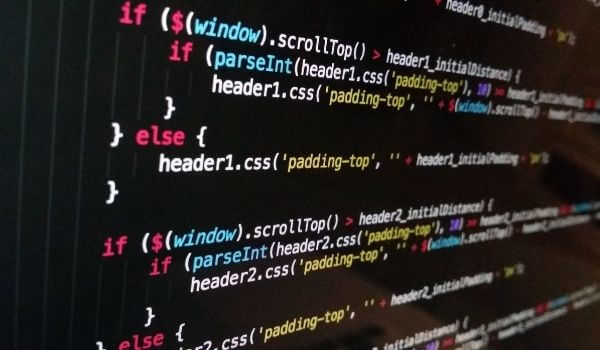

Post #1
Os primeiros-ministros de Polônia, República Tcheca e Eslovênia foram até Kiev e voltaram A Rússia deu sinais de que aceitará um acordo pelo qual o exército da Ucrânia seja neutro Já na cidade sitiada de Mariupol, mais um comboio conseguir retirar moradores, desta vez com 2.000 carros Numa reunião, o presidente Zelensky disse que a Ucrânia deve admitir que não pode entrar na Otan. Nosso E-mail